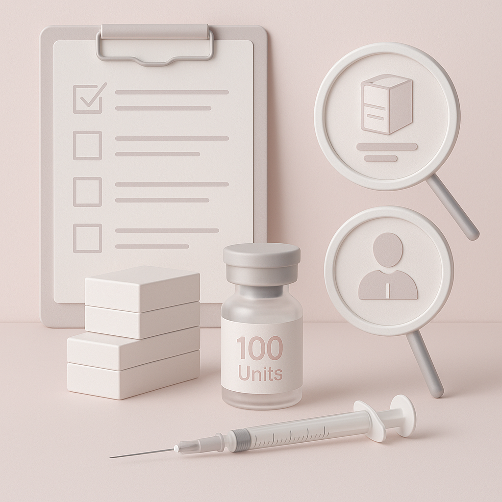
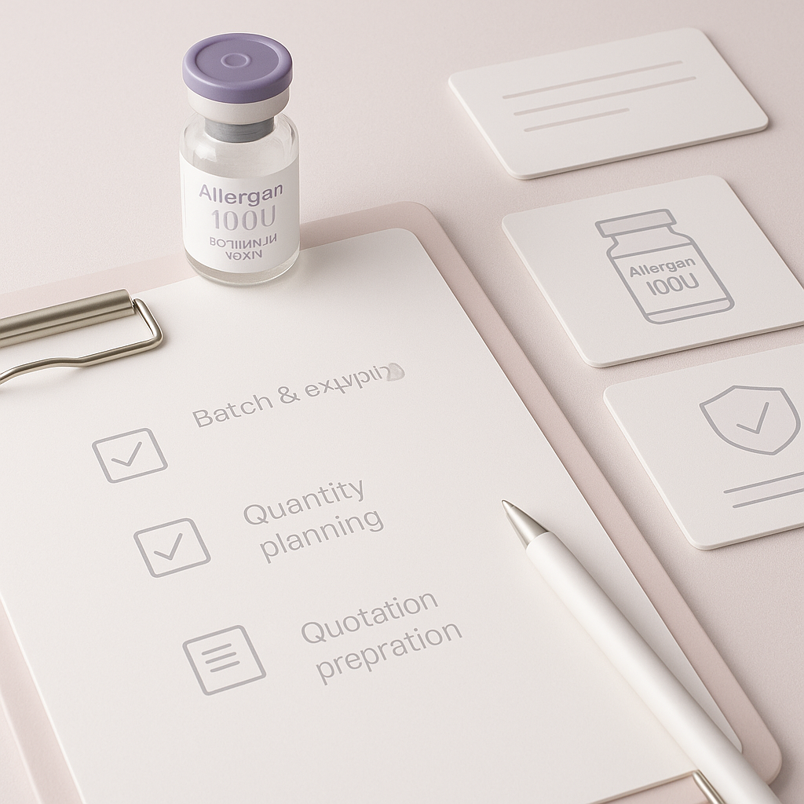
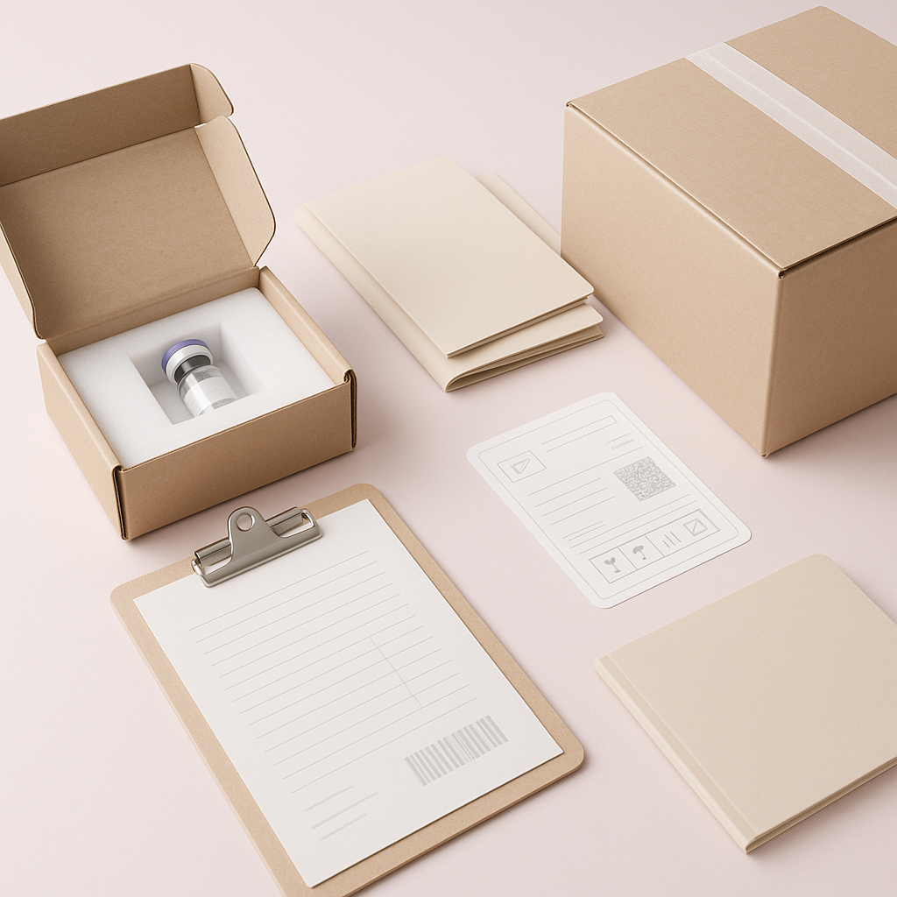

This guide provides practical insights for sourcing Allergan 100U, covering everything from buyer scenarios to logistics and documentation.
For aesthetic clinics, sourcing high-quality products like Allergan 100U can be a daunting task. With numerous suppliers in the market, professional buyers often face challenges in identifying reliable wholesale suppliers who can meet their specific needs. Understanding the nuances of sourcing this popular botulinum toxin is crucial for ensuring the success of your clinic and maintaining patient satisfaction.
In this guide, we will explore practical strategies for sourcing Allergan 100U, including key considerations for buyers, effective comparison criteria, and essential logistics information. By the end, you will have a clearer understanding of how to navigate the wholesale landscape for this product, enabling you to make informed purchasing decisions that align with your clinic's operational goals.
Key Takeaways
- Identify reputable Allergan 100U wholesale suppliers with a strong track record in the industry.
- Understand the importance of packaging and batch visibility for maintaining product integrity and compliance.
- Establish clear communication channels with suppliers to streamline the ordering process and address any concerns.
- Plan your minimum order quantities (MOQ) based on your clinic's treatment schedules and patient demand.
- Stay informed about shipping and documentation requirements to avoid delays and ensure compliance with local regulations.
What this guide covers
- Understanding Allergan 100U
- Buyer scenarios and needs
- Comparison criteria for suppliers
- Checklist before requesting a quote
- Logistics: shipping, packing, and documentation
- MOQ and reorder planning
- Frequently asked questions
What buyers should understand first

Allergan 100U is a well-known botulinum toxin product widely used in aesthetic clinics for cosmetic procedures. It is essential for clinics, spas, resellers, and distributors to understand that this product is not just a commodity; it requires careful sourcing to ensure quality and efficacy. Buyers must be aware of the product's specifications, including its packaging, shelf life, and storage requirements, to maintain the highest standards in their practices. Proper sourcing not only impacts the quality of treatments provided but also influences the overall reputation of the clinic.
Which buyers is this most relevant for?
This guide is particularly relevant for various buyer scenarios, including:
- Aesthetic Clinics: Clinics looking to stock Allergan 100U for their treatments need to plan their orders based on patient demand and treatment schedules. Understanding their patient flow can help in determining the right quantities to order.
- Spas: Spas offering aesthetic services may require smaller quantities but need to ensure product quality and supplier reliability. They often need flexibility in order sizes and delivery times.
- Resellers and Distributors: Those in the business of reselling must evaluate suppliers based on pricing, MOQ, and shipping logistics to maintain competitive pricing. They should also consider their customer base's needs and preferences when sourcing products.
- Medical Professionals: Doctors and practitioners who provide aesthetic treatments may need to source Allergan 100U for their practices, requiring a reliable supplier who can meet their specific needs.
How to compare options before ordering
When comparing options for Allergan 100U, consider the following criteria:
- Product Type: Ensure the product is genuine and meets your clinic's standards. Verify that it is sourced from authorized distributors.
- Brand Reputation: Research the supplier's reputation in the market. Look for testimonials and case studies that demonstrate their reliability.
- Packaging: Check for secure and compliant packaging that protects the product during transit. Proper packaging is essential to prevent damage and contamination.
- Batch/Expiry Visibility: Ensure that the supplier provides clear information about batch numbers and expiry dates. This is crucial for compliance and patient safety.
- Supplier Communication: Evaluate how responsive and informative the supplier is during the inquiry process. Good communication can prevent misunderstandings and delays.
- Destination Requirements: Consider any specific requirements for shipping to your location, including customs regulations and import restrictions.
Buyer checklist before requesting a quote


- Confirm your desired quantity and product specifications, including packaging options.
- Research potential suppliers and their reputations through reviews and referrals.
- Prepare a list of questions regarding pricing, MOQ, and shipping logistics.
- Check for any required documentation or certifications needed for your clinic.
- Understand your clinic's budget and reorder frequency to plan accordingly.
- Assess your storage capabilities to ensure proper handling of the product upon arrival.
Shipping, packing and documentation questions
Logistics play a critical role in the successful sourcing of Allergan 100U. Here are some common considerations:
- Shipping Methods: Discuss available shipping options with your supplier to find the best balance of cost and speed. Consider express shipping for urgent orders.
- Packing Standards: Ensure that the supplier adheres to industry standards for packing to prevent damage during transit. Proper insulation and cushioning materials are essential.
- Documentation Requirements: Confirm what documentation is needed for customs clearance and compliance with local regulations. This may include invoices, certificates of origin, and import permits.
- Tracking Information: Request tracking information for your shipment to monitor its progress and ensure timely delivery.
- Insurance Options: Inquire about insurance for your shipment to protect against loss or damage during transit.
MOQ, quotation and reorder planning
When preparing to order Allergan 100U, consider the following:
- Determine your minimum order quantities (MOQ) based on your clinic's usage and patient demand. This will help in negotiating better terms with suppliers.
- Prepare to request a quotation from multiple suppliers to compare pricing and terms. Don't hesitate to negotiate for better rates based on your order volume.
- Plan for reorders by keeping track of your inventory levels and lead times. Establish a reorder point to avoid running out of stock.
- Contact SOLA to help confirm current availability and obtain a wholesale quotation tailored to your needs. SOLA can provide insights into market trends and product availability.
FAQ
What is the typical MOQ for Allergan 100U?
The MOQ can vary by supplier, so it's essential to inquire directly with potential wholesalers to find terms that suit your clinic's needs.
How can I verify a supplier's credibility?
Research online reviews, ask for references, and check for industry certifications. Engaging with other clinics or professionals can provide valuable insights.
What should I do if my order is delayed?
Contact your supplier immediately to get updates on your shipment and discuss alternative solutions. Maintaining open communication is key to resolving issues quickly.
Are there specific shipping requirements for Allergan 100U?
Yes, ensure that the supplier complies with all local regulations regarding the shipping of pharmaceutical products. This may include temperature control and secure packaging.
How often should I reorder Allergan 100U?
Reorder frequency will depend on your clinic's usage and patient demand; monitor your inventory closely to ensure you have sufficient stock on hand.
Contact SOLA for wholesale quotation via WhatsApp.
Planning a wholesale request?
Send product names, quantities and destination for a tailored discussion.
Contact SOLA on WhatsApp →General educational content for professional buyers. Not medical, legal, regulatory or import advice.